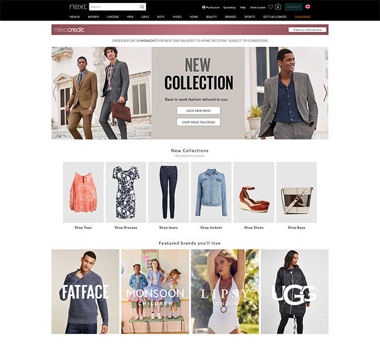

About Me
As a full-stack developer, I have experience in both client-side (frontend) and server-side (backend) development. I enjoy creating interactive user interfaces using HTML, CSS, and JavaScript, and I also have knowledge of popular frameworks and libraries such as React and Vue.js.
Additionally, I have skills in database design and creating RESTful APIs using technologies like Node.js and Express. I'm passionate about building complete applications that offer a seamless and efficient experience for users.
My Projects
Task Management Application
I developed a complete web application that allows users to create, organize, and manage their daily tasks. I used HTML, CSS, and JavaScript to create an intuitive and user-friendly interface, and Node.js and Express for the backend. I implemented a database to store the tasks and utilized RESTful APIs for communication between the frontend and backend.
Fashion E-commerce Store
I collaborated on the development of an online fashion store that provides a seamless and appealing shopping experience. I used React as the frontend framework to create reusable and dynamic components. I implemented a product management system and shopping cart using technologies like Redux and Firebase. Additionally, I designed and developed an administration interface for store owners to manage their inventory and track sales.
Travelers' Social Network
I participated in the development of a social media platform dedicated to travelers. I used Vue.js to build an interactive and responsive interface where users can share their travel experiences, connect with other travelers, and discover new adventures. I implemented features like geolocation, map API integration, and the ability to follow other users.